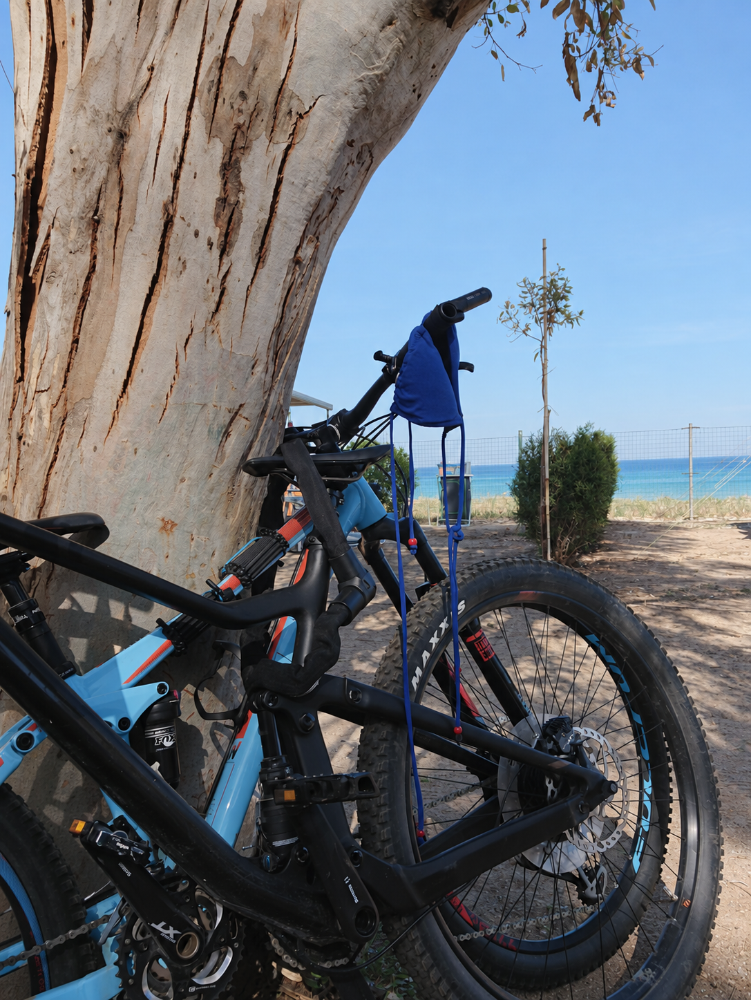
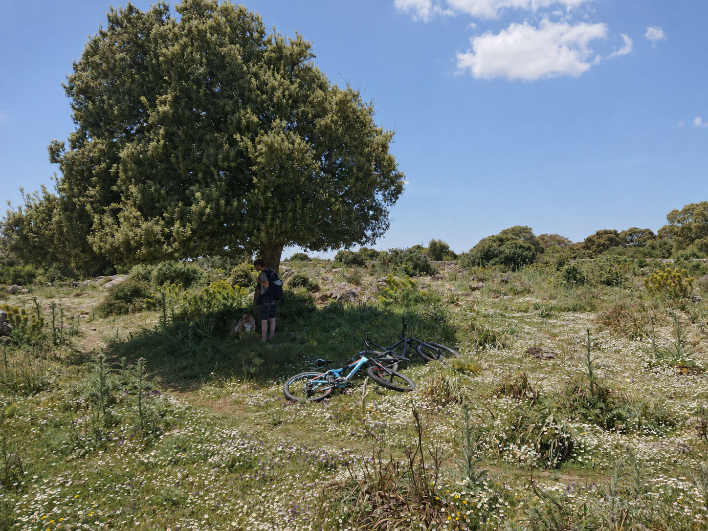
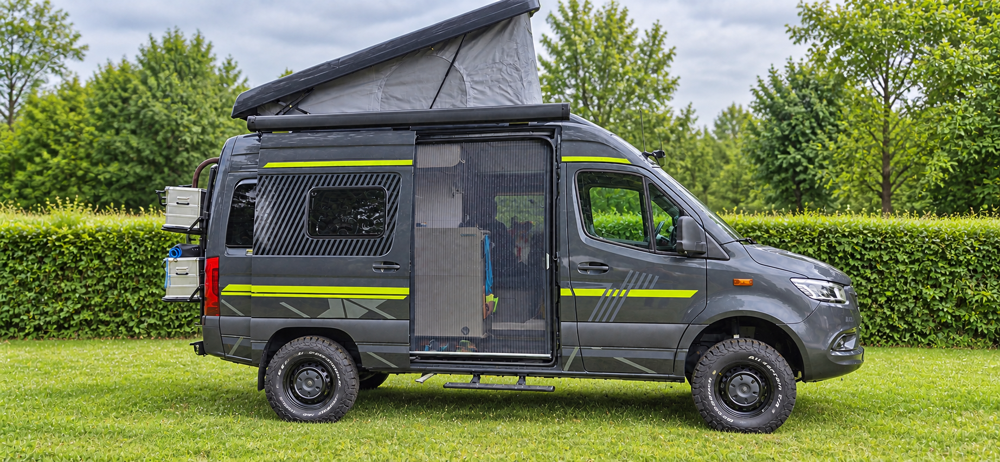

Der Van als
Basislager.
Die Mountainbikes reisen am Van mit. So können wir dort starten, wo eine Strecke interessant wird, und nach der Tour wieder zu unserem mobilen Zuhause zurückkehren.
MIT DEM MOUNTAINBIKE UNTERWEGS
Die Bikes gehören zu unserer Art zu reisen. Der Van bringt uns an den Ausgangspunkt – danach entdecken wir die Landschaft auf zwei Rädern.
Auf Sardinien und in Italien sind daraus Touren geworden, an die wir uns noch lange erinnern: zwischen Küste, Wald und felsigen Trails.
Unsere Touren
VOM VAN AUF DEN TRAIL
Die Mountainbikes reisen am Van mit. So können wir dort starten, wo eine Strecke interessant wird, und nach der Tour wieder zu unserem mobilen Zuhause zurückkehren.
Mit dem Bike verändert sich das Tempo. Wege, Wälder und Küsten erleben wir unmittelbarer als aus dem Fahrzeug – und erreichen Plätze, an denen die Straße längst aufgehört hat.
Wir nehmen keine Wunschliste mit, sondern das, was wir unterwegs wirklich brauchen. Entscheidend sind für uns nicht die Zahlen, sondern die gemeinsamen Erlebnisse.

SARDINIEN 2019
Auf Sardinien waren die Mountainbikes fester Teil unserer Reise. Wir sind durch abwechslungsreiche Landschaften gefahren, haben am Meer pausiert und die Insel abseits der Straßen erlebt.
Der Van verbindet die Etappen. Das Bike öffnet die Wege dazwischen.
Unsere Sardinienreise lesen ↗
VAN · BIKE · KAYAK
Van, Mountainbike und Kajak gehören für uns zusammen. Jedes eröffnet einen anderen Weg durch die Landschaft.